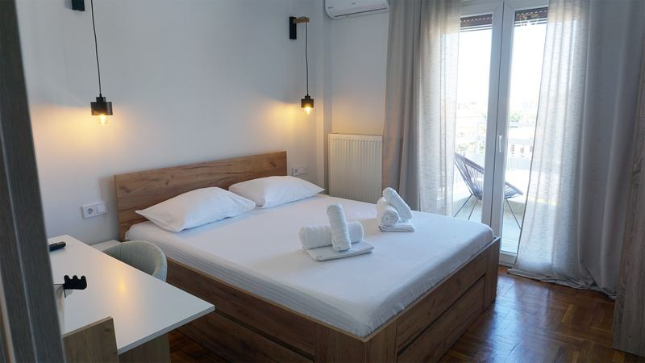
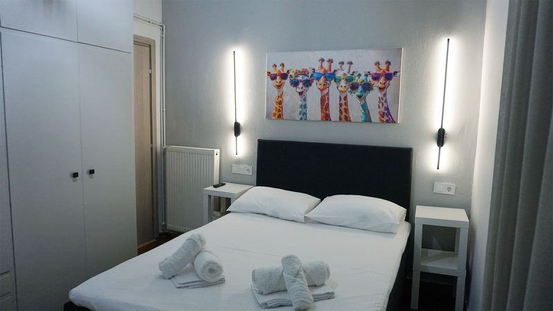
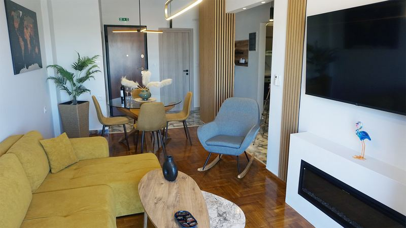

О жилье
до 6 гостей · 2 спальни · 2 кровати · 1 диван-кровать · 1 ванная · 60 м²
Светлая квартира 60 м² с полным ремонтом с панорамным видом на все Салоники, от Белой башни до леса Сейх-Су, и с морем на горизонте.
Объединённые гостиная и столовая с деревянным полом, электрокамином и большим телевизором. Диван раскладывается в кровать.
Две спальни с телевизором и кондиционером: в первой двуспальная кровать 160×200, рабочий стол и выход на балкон, во второй двуспальная кровать 140×200.
Полностью оборудованная кухня с духовкой, стеклокерамической плитой, холодильником, микроволновкой, кофемашиной Nespresso, чайником и тостером, а также барная стойка для завтрака.
Современная ванная с тропическим душем, полотенцами, халатами и средствами по уходу.
С балкона со столиком и стульями открывается вид на город: идеально для утреннего кофе или бокала вина вечером.
Удобства
- Панорамный вид на город
- Балкон
- Wi-Fi
- Кондиционер
- Отопление
- Электрокамин
- Телевизор
- Полностью оборудованная кухня
- Кофемашина Nespresso
- Капельная кофеварка
- Духовка и микроволновка
- Стиральная машина
- Тропический душ
- Постельное бельё
- Банные полотенца и полотенца для лица
- Халаты
- Шампунь и гель для душа
- Зубные щётки и паста
- Тапочки
- Угощение при заезде: вино, печенье и кофе
- Диван-кровать
- Рабочий стол
- Лифт
- Домашние животные по запросу
- Детская кроватка бесплатно
- Самостоятельный заезд с ключницей
Расположение
Lysimachou Kaftantzoglou 32, 546 39 Thessaloniki